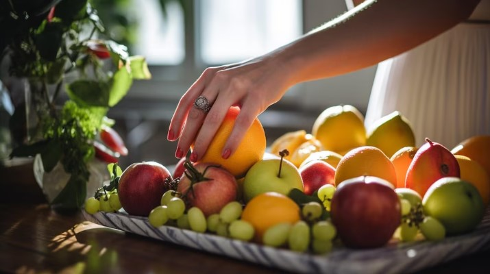

Incorporar más verduras en la dieta reduce el riesgo de enfermedades crónicas, según expertos
Amendolara Lautaro, Abril 6, 2025
Un nuevo estudio revela que aumentar el consumo diario de verduras puede disminuir significativamente la aparición de problemas cardíacos, diabetes tipo 2 y obesidad.
Leer mas